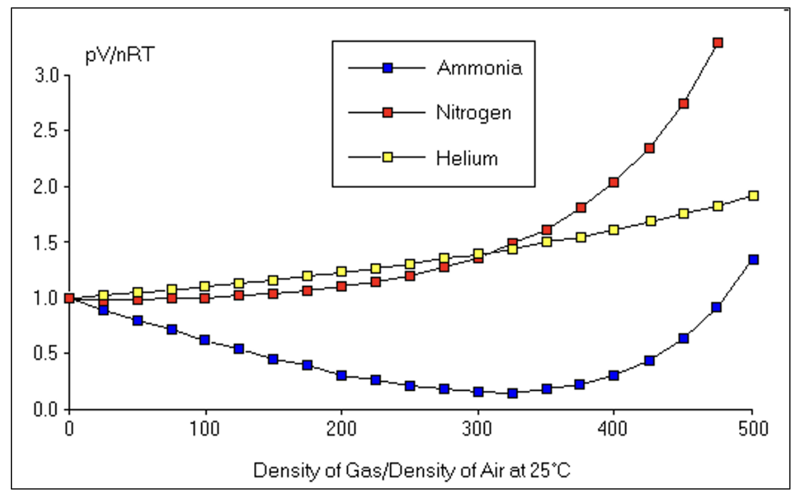
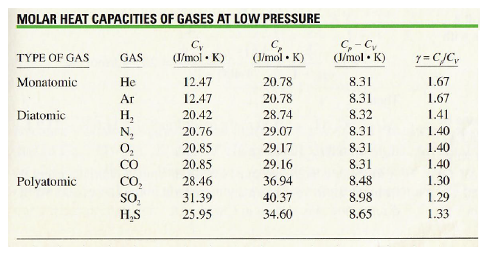

Lecture 5: The Gas Laws#
Learning Objectives#
By the end of this lecture you should:
Be able to recall Charles’, Boyle’s and Amonton’s laws.
Be able to recal the ideal gas equation.
Be able to describe the limits of the gas laws.
Be able to explain why there are two heat capacities for ideal gases.
Recall the link between internal energy and temperature for ideal gases.
Useful things to know#
Before delving into the gas laws, it is important that we lay the ground rules for the units that we are going to use moving forward. The gas laws themselves concern themselves with the relationships between temperature, pressure, volume and the amount of gas, so it is important that we are using the correct units in our calculations.
Pressure is defined as the amount of force something exerts per unit area:
\( P = \frac{F}{A}, \)
therefore the unit for pressure is N\(\,\)m^{2}. This is simply referred to as the Pascal which is denoted Pa. An important number to remember is that air pressure at sea level is equal to \(1.01 \times 10^5\) Pa. This is worth remember as a reference number.
The gas laws also require us to measure volume in m\(^3\) and temperature in Kelvin not Celsius.
When performing gas law calculations we may either use the number of molecules or moles when describing the amount of gas used in our gas law calculations, however we must make sure we use the correct gas constant for the units we have - more on this later!

The image below shows an example of a system for which we may want to use the gas laws. The image shows an empty bottle that was opened and then resealed at the top of a mountain where the air pressure is lower. As the bottle is brought to a lower and lower elevation, it becomes more and more compressed (reduced volume) in order to maintain a pressure equilibrium inside and outside of the bottle.
This example seems rather random, but the gas laws are very powerful and you will use them routinely when studying systems such as engines when taking thermodynamics in your undergraduate courses.
The Gas Laws#
Boyle’s Law#
Boyle’s law states that the pressure of a gas is inversely proportional the the volume that the gas occupies at a given temperature and number of moles. This can be expressed mathematically as:
\( P \propto \frac{1}{V}. \)
For this law to be true, the temperature and number of moles of gas in the system must remain constant.
What does this mean? Well consider a piston in an engine. If we have gas contained within a cylinder, the volume of which is controlled using a piston, if we lower the piston we are in effect reducing the volume in which the gas can occupy. This means that the gas molecules are more likely to collide with one another and the surface of the container in which they are held, thus the pressure that they exert on the walls of the container increases. The opposite is true if we extract the piston from the chamber. In this case the volume of the chamber increases and the pressure the gas exerts on the walls of the container decreases.
Naturally, as we have a linearly proportional relationship we can introduce a constant of proportionality, \(c_1\):
\( P = \frac{c_1}{V}, \)
which can also be written as:
\(PV = c_1.\)
If the product of the pressure and volume is a constant, we can also write:
\(P_1 V_1 = P_2 V_2.\)
Charles’ Law#
Charles’ Law states the volume that a gas occupies is directly proportional to the temperature of the gas for a given pressure and number of moles of gas. This can be expressed mathematically as:
\( V \propto T. \)
For this law to be true, the pressure and number of moles of gas in the system must remain constant.
Let us again consider our gas in a piston. This time, rather than compressing the gas with the piston we are just going to supply it with heat so that the temperature of the gas increases. As we are again assuming that none of the gas molecules escape, as the gas heats up their kinetic energy increases and the gas expands. The only way of maintaining a constant pressure in this scenario is for the gas in the chamber to raise the piston and increase the volume of the cylinder.
As we have another linearly proportional relationship, we can introduce a second constant of proportionality:
\( V = c_2 T, \)
therefore:
\( \frac{V}{T} = c_2, \)
and consequently:
\( \frac{V_1}{T_1} = \frac{V_2}{T_2}.\)
A consequence of this linear relationship is that if we plot it on a graph (\(V\) on the \(x\)-axis and \(T\) on the \(y\)-axis), we will get a line that we can extrapolate backwards and forwards. This actually implies the existence of absolute zero (a lowest possible temperature) as if we keep going to smaller and smaller volumes we will eventually get to zero, and as it is not possible to have a negative volume the corresponding temperature must be the lower limit for temperatures!
Anomtons’ Law#
Also known as the “Guy-Lussac” or “Pressure” law, Anomtons’ law states that the pressure of a gas is directly proportional to the temperature of a gas for a given volume and number of moles. This can be expressed mathematically as:
\( P \propto T. \)
Again if we consider our gas in a cylinder with a piston, but this time the piston is locked in place, if we supply heat to the gas, it will gain kinetic energy and the molecules will be moving faster, however, as the volume of the container is unable to expand, this means that the gas molecules are striking the walls of the container more frequently and with more force, thus the pressure that the gas exerts increases with the temperature.
As we have another linearly proportional relationship, we can introduce a second constant of proportionality:
\( P = c_3 T, \)
therefore:
\( \frac{P}{T} = c_3, \)
and consequently:
\( \frac{P_1}{T_1} = \frac{P_2}{T_2}.\)
In summary, we have three gas laws each of which assume that one other variable and the number of moles of gas in the system remains constant (i.e. no gas escapes from the system). Tthese themselves can be very convenient when performing calculations, but it is also convenient to be able to combine these gas laws into one ideal gas law.
The Ideal Gas Law#
If we take each of the constants that we have defined above, \(c_1\), \(c_2\) and \(c_3\) and take the product of them we get:
\(c_1 \cdot c_2 \cdot c_3 = \left(PV \right) \cdot \left(\frac{V}{T} \right) \cdot \left(\frac{P}{T} \right),\)
which can be simplified to:
\( c_1 \cdot c_2 \cdot c_3 = \frac{P^2 V^2}{T^2},\)
\( \sqrt{c_1 \cdot c_2 \cdot c_3} = \frac{P V}{T}.\)
The left handside of this equation is made up of constants so is simply a constant itself, we can write this as:
\( R = \frac{P V}{T}, \)
but what is \(k\) equal to? To answer this we can use the fact that one mole of an ideal gas occupies at standard temperature (0˚C) occupies \(22.4\,\)L (\(0.0224\,\)m\(^3\)) of volume and exerts a pressure of \(1.013 \times 10^5\,\)Pa. Plugging this into the equation above gives:
\( k = \frac{1.013 \times 10^5 \times 0.0224}{273.15}, \)
\( k = 8.31 Pa\, m^3 \, K^{-1}. \)
The constant \(R\) is known as the molar gas constant. The molar gas constant is defined for one mole of gas, so if we have a different number of moles, \(n\), we must adust the equation accordingly:
\( nR = \frac{P V}{T}, \)
or
\( PV = nRT. \)
This is the ideal gas equation/law! Often we will take measurements of the same system under different conditions. For a closed system (one wherein no gas molecules can enter or escape), \(n\) and \(R\) will remain constant. This means that for a closed system, we can write:
\( \frac{P_1 V_1}{T_1} = \frac{P_2 V_2}{T_2} \)
Alternative Ideal Gas Law#
The ideal gas law is often also written as:
\( PV = N k_B T \),
where \(N\) represents the number of molecules of gas (rather than the number of moles) and \(k_B\) is the Boltzman constant, which is equal to \(1.38 \times 10^{23}\,\)J\(\,\)K\(^{-1}\). This equation is entirely consistent with the one that we defined above, and we can show this by introducing Avagadro’s number, \(N_A\).
We know that one mole of gas contains \(\approx 6.02 \times 10^{23}\) molecules, therefore the number of gas molecules, \(N\), is simply equal to the number of moles, \(n\), multiplied by \(N_A\):
\( N = n N_A,\)
This can be substituted into our alternative gas equation above:
\( PV = n N_A k_B T. \)
Now if we want to get an equation that looks like the original version of the ideal gas law, we need to replace the \(N_A k_B\) term with \(R\), and we can do this if we state:
\(N_A k_B = R,\)
\(\therefore PV = nRT,\)
thus we have established that our two constants are related via Avadagros number:
\(k_B = \frac{R}{N_A}. \)
We can use either ideal gas law when performing calculations, it is simply a choice of what is most convinent depending on if we are given the number of moles of gas or the number of gas molecules.
Ideal Gas Assumptions
Whenever we use the ideal gas law in a calculation, we are making a series of assumptions about the system we are modelling. The assumption being that we are working with an ideal gas in a system that has a set of specific properties:
The ideal gas particles are “point-like” and have no volume. A consequence of the particles are small compared to the container they are stored in and the average distance between particles.
The gas particles are inert and do not attract or repel one another and only collide elastically off one another and the walls of the container.
The ideal gas particles are in constant motion.
The walls of the container are rigid, infinitly massive and do not move.
In reality, no gases actually behave in this way although in some circumstances the ideal gas model is a very good approximation of how the system will behave. Looking at our ideal gas equation, as \(PV=nRT\), we would expect that the ratio of \(PV\) to \(nRT\) would remain equal to 1. It is observed that this is often the case for low gas densities, but that as the number of molecules (and therefore density) increases, the ratio diverges. This is shown in the plot below.

As the density of the gas increases, there are more and more molecules occupying a given space, which increases the probability of the gases interacting with one another electrostatically. This was not accounted for in the ideal gas model. Additionally, real gases actually do have volume, so even if the dimensions of the container remain the same, as more and more gas molecules are added, there is less and less volume for them to move around in. Again, this is not accounted for in the ideal gas model.
Additionally, at high temperatures it would be expected that the kinetic energy of a real gas is high and therefore the intermolecular attraction acting between molecules is negligable in comparison - in this scenario, the real gas would behave similarly to an ideal gas. At lower temperatures, perhaps close to the condensation point, the kinetic energy of the gas particles is much lower and they move much more slowly. Now the intermolecular forces acting between molecules is no longer negligable as assumed by the ideal gas model. In this scenario, the real gas will no longer behave like an ideal gas.
Heat, Work and Internal Energy#
Recall that the internal energy of a system (e.g gas) can be increased by either doing work on the system, \(\Delta W\), or by adding heat to the system \(\Delta Q\), and that the internal energy of the system will increase by an equivalent amount:
\(\Delta U = \Delta Q + \Delta W.\)
This is the first law of thermodynamics and applies to all systems not just gases. The internal energy of a gas depends only on its temperature, not on its pressure or volume (we do not cover the kinetic theory of gases on this course, but you are free to look up this proof yourself.)
A more intuitive way to think of this is to consider that the temperature of our gas is related to the kinetic energy of its molecules - as this is how we defined temperature in the first lecture. We are going to consider one way of doing work on a gas, the particular case we are going to look at is isobaric compression.
In thermodynamics there are lots of processes that take place where one parameter remains constant, for example temperature, volume or pressure. These are known as isothermal, isochoric and isobaric processes, respectively.
Let us consider what happens when we compress a gas. In order to do this we must do work on the gas. If we change the volume of the container the gas is contained within by a small amount, the pressure will remain approximately constant. If we assume that the piston compressing the gas moves freely (it moves without being impeded by friction), we may use our classic equation for work done to determine the work done on the gas as it is compressed:
\( W = F \Delta s. \)
We however are concerned with pressure and volume, which we can write expressions for which are consistent with out current equation:
\(P = \frac{F}{A},\)
and
\( \Delta V = A \Delta x,\)
where \(A\) is the cross sectional area of the cylinder and \(\Delta x\) is the displacement of the piston along its length. By simply dividing the force by area and multiplying \(\Delta x\) by the area, we get an expression for the work done in compressing the gas in terms of pressure and volume:
\( W = \frac{F}{A} \cdot A \Delta x. \)
This equation is perfectly consistent with the original expression for the work done as the two area terms cancel out, however written like this we can substitute in our two equations above to give:
\( W = P \Delta V. \)
This we can determine how much work must be done on a gas to compress it (this condition for determining the work done when compressing the gas assumes that the pressure remains constant). Next year, you will see more complex calculations to determine the work done when this is not the case.
Molar Heat Capacities#
Finally, now we will introduce the idea of heat capacities at constant pressure and at constant volume. Recall that the molar heat capacity is the amount of heat required to raise one mole of a substance by one Kelvin. However, in different circumstances, the amount of energy required to increase the temperature of the gas will differ.
Again consider a gas contained within an engine cylinder. If we supply heat to a gas which is held at a constant volume (the change in volume is zero because the piston is unable to move), the gas will do no work on its surroundings (as there is no change in volume - see equation above). This means that all of the heat added solely goes into increasing the temperature of the gas.
On the other hand, if we are to supply heat to a gas and allow it to maintain a constant pressure, this means that the gas must expand and occupy a greater volume. Using the cylinder example above, this means that the gas is going to push against the surrounding walls and move the piston (which can freely move in this scenario). In this instance the heat supplied both increases the temperature of the gas, which then does work on the surroundings. This means that we are going to need to supply more heat for the same increase in temperature when compared to the constant volume scenario.
An important relationship to remember is that the molar heat capacity at constant pressure, \(c_p\), is equal to the molar heat capacity at constant volume \(c_v\) plus the molar gas constant:
\(c_p = c_v + R.\)
The table below shows various heat capacities at constant pressure and volume:

Questions#
Warning
Atempt the questions before looking at the solutions otherwise you will not learn!
Students who look at mark schemes without going through the motions of a question often think “yes, that’s what I would have done”, but are then unable to perfom on exams as the knowledge was never consolidated through practise.
Note
Units have been omitted in calculations below for simplicity. Ensure you know what each value represents.
Question 1#
An empty 500ml bottle is opened at the top of a mountain, it is subsequently sealed and brought back down the mountain. As the air external air pressure increases, to maintain a pressure equilibrium inside and outside of the bottle, the bottle becomes compressed to a new volume of 256 ml. Assume that the temperature of the gas remained constant at 25.0 °C.
a) Determine the ratio of the pressure at the top of the mountain to the bottom of the mountain.
b) If the initial gas pressure within the bottle at the top of the mountain was 7.60 k Pa, determine the air pressure at the bottom of the mountain.
c) Calculate how many gas molecules are contained within the sealed bottle.
Q1a Solution
For this question we can assume that the number of moles of gas trapped in the bottle remains constant and the gas itself behaves like an ideal gas. We also know that the temperature of the system remains constant at \(25\)˚C which is \(293.15\,\)K. Therefore we can use Boyles’ law:
\(P_T V_T = P_B V_B \)
\(\frac{P_T}{P_B} = \frac{V_B}{V_T} \)
\(\frac{P_T}{P_B} = \frac{256}{500} \)
\(\frac{P_T}{P_B} = 0.512.\)
Q1b Solution
As we have now determined the ratio of the pressure at the top of the mountain to the pressure at the bottom and we already know the pressure at the top, we can nicely determine the pressure at the bottom of the mountain:
\(\frac{P_T}{P_B} = 0.512.\)
\(\frac{P_T}{0.512} = P_B.\)
\(P_B = \frac{7.60 \times 10^3}{0.512}\)
\(P_B = 14800\,Pa = 14.8\,kPa.\)
Q1c Solution
For this question, we know the temperature of the gas, and we have two sets of pressure and volume measurements we can use to determine the number of gas molecules using the ideal gas equation. In an exam I would be tempted to use the pressure and volume provided rather than calculated just incase I had made a mistake with my earlier calculations:
\(PV = Nk_BT\)
\(N = \frac{PV}{k_BT}\)
\(N = \frac{17.6 \times 10^3 \times 0.0005}{1.38 \times 10^{23} \times 293.15} \)
\(N = 9.24 \times 10^{20}\, \text{molecules}.\)
The trick with this question is being able to convert between ml and cubic metres (\(1\,\)ml = \(1\times10^{-6}\,\)m\(^3\).).
Question 2#
A gas held at \(1.01 \times 10^5\,\)Pa is isobarically compressed in an engine cylinder with an initial volume of \(0.000250\,\)m\(^3\). If the compression ratio (\(Vi/Vf\)) is equal to \(5.00\), how much work is done to compress the gas?
Q2 Solution
As this is an isobaric compression we can use our equation for the work done derived earlier:
\(W = P\Delta V,\)
Knowing the intial volume and the compression ratio allows us to determine the final volume:
\(\frac{V_i}{V_f} = 5,\)
\(V_f = \frac{V_i}{5},\)
\(V_f = \frac{0.00025}{5},\)
\(V_f = 0.00005\, m^3.\)
The change in volume and therefore work done are then calculated as:
\(W = P(V_i - V_f) \)
\(W = 1.01 \times 10^5 (0.00025 - 0.00005) \)
\(W = 20.2\,J.\)
Question 3#
What are the assumptions we make when modelling a system using \(PV = nRT\)?
Q3 Solution
The ideal gas particles are “point-like” and have no volume. A consequence of the particles are small compared to the container they are stored in and the average distance between particles.
The gas particles are inert and do not attract or repel one another and only collide elastically off one another and the walls of the container.
The ideal gas particles are in constant motion.
The walls of the container are rigid, infinitly massive and do not move.